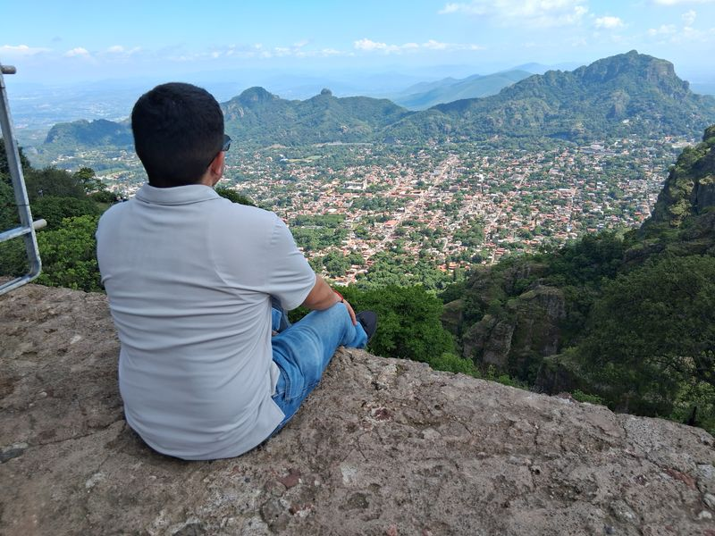
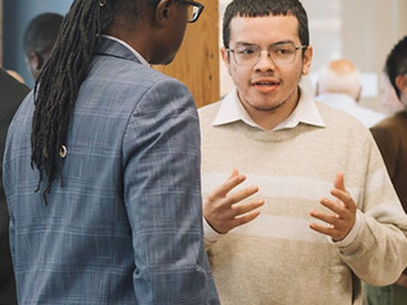
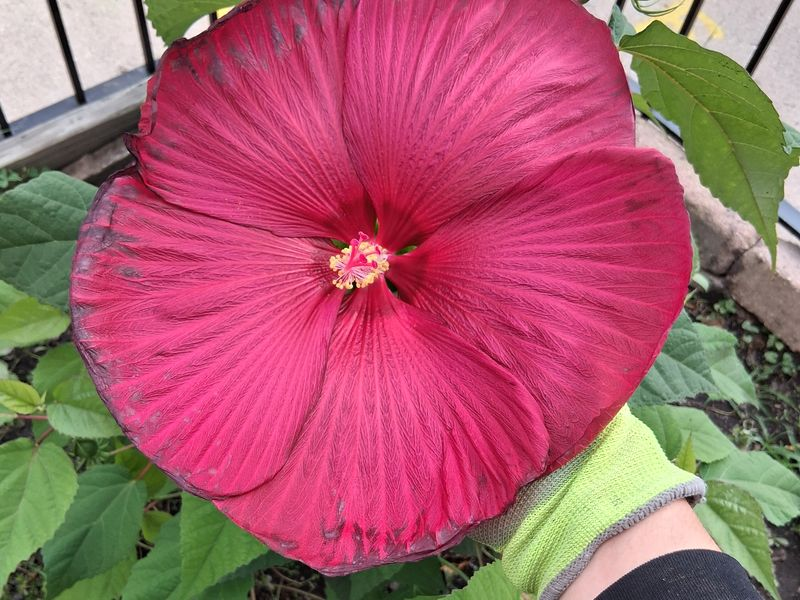

About Me
I'm a developer in training at i.c.stars, where I'm building real software for real clients as part of a team. Before i.c.stars, I spent a year at Kale Realty guiding clients, many of them elderly, through digital e-signature contracts, making sure every document was complete and accurate, and managing appointment scheduling. On busy days, I stepped in wherever the office needed help.
Walking people through technology that wasn't built with them in mind showed me how much good design matters. That's what drives me toward front-end development and UI/UX: building interfaces that are clear and easy for anyone to use. I'm currently the UI/UX lead on a client project for Medline, and I'm looking for opportunities to keep building user-focused software.
Beyond the Code


